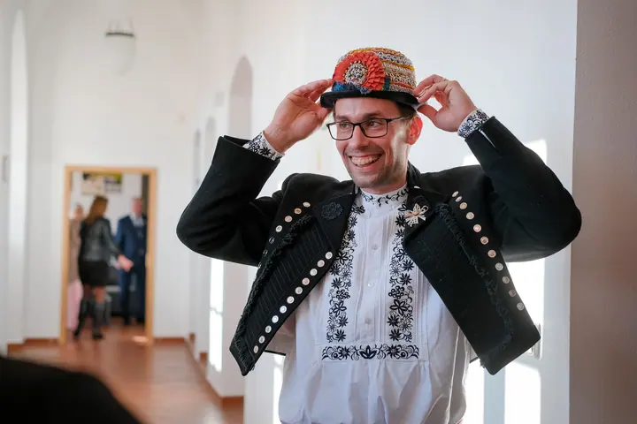
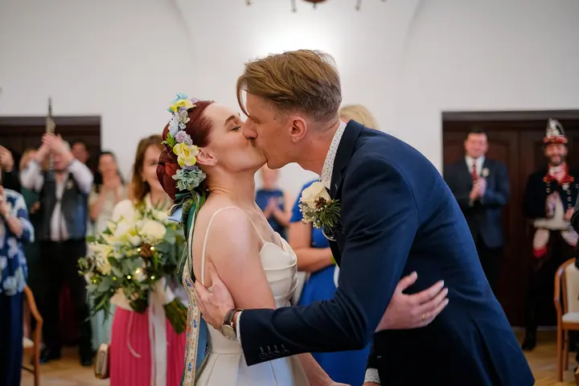

jedna
Svatební focení
Fotím momentky a věci tak, jak se přirozeně dějí, od ranních příprav až po večerní divočinu na parketě. Vybrat si můžete ze tří balíčků WISH, DREAM a ROYAL na 6, 9 nebo 12 hodin.

Svatební fotograf a kameraman · Zlín, Olomouc, Brno

Jmenuji se Jakub Puškáš a svatby fotím už třináct let. Miluju slzy dojetí, smích i pořádnou divočinu večer na parketě. Fotím ze Zlína po celé Moravě i v Praze.
Více o mně
Co dělám
jedna
Fotím momentky a věci tak, jak se přirozeně dějí, od ranních příprav až po večerní divočinu na parketě. Vybrat si můžete ze tří balíčků WISH, DREAM a ROYAL na 6, 9 nebo 12 hodin.
dvě
Už tři roky k fotkám točím i svatební video, souběžně s asistentem. Jak fotky a video zkombinovat, vyladíme spolu podle vašich představ.
tři
Rád fotím rodiny při focení „U nás doma“, v přírodě i ve chvílích, kdy čekáte miminko. Je to stejně uvolněné a přirozené jako na svatbě.
Fotím také plesy a další společenské události. Nenápadně, bez zbytečného blesku a tak, aby se hosté mohli v klidu bavit.
Ve váš svatební den se s vámi budu smát i brečet.

Za objektivem
Svatby fotím už třináct let a pořád mě to děsně baví. Sám jsem se před lety ženil a fotograf pro mě byl hned po nevěstě, svědkovi a oddávajícím nejdůležitějším svatebním hostem. Proto do každé svatby dávám kus sebe.
Mám rád momentky a fotím věci tak, jak se přirozeně dějí. Nedělám rámus, nefotím zbytečně bleskem a nepózuju lidi. Přijedu s předstihem, zůstanu klidně do noci, a když je potřeba, pomůžu, dovezu, půjčím. Takový kamarád do deště.
Už tři roky k fotkám točím i svatební video, společně s asistentem. Kromě svateb rád fotím rodiny doma i v přírodě, čekání na miminko a plesy. Každý rok se snažím přidat novou vychytávku a posunout fotky zase o kousek dál.
Jakub
Ozvěte se mi a já vám obratem potvrdím, jestli mám termín ještě volný. Pošlu vám aktuální ceník, nebo si termín i balíček rovnou zarezervujete v rezervačním kalendáři.
Dostanete ode mě dokument, kam mi postupně vepíšete podrobnosti o svatebním dni. Komunikovat budeme tak, jak je vám to nejbližší: přes Messenger, e-mail, telefon nebo videohovor.
Týden před svatbou se rád potkám osobně nebo přes videohovor, klidně i dřív. Naladím se na vás dva, abych pak lépe zachytil emoce a opravdové momentky.
Starosti nechte na svědcích, na mně a na ostatních a užijte si jeden druhého. Upravené fotografie vám pošlu ve webové galerii.
Portfolio
Fotografie jsou ilustrační
Otázky
Nabízím tři: WISH (6 hodin focení, 150 upravených fotek), DREAM (9 hodin, 250 upravených fotek a 20 záběrů na Instax Wide) a ROYAL (12 hodin, 350 upravených fotek). Aktuální ceny na letošní rok najdete v rezervačním systému.
Ano, svatební video točím už tři roky, souběžně s asistentem. Jak fotky a video zkombinovat, vyladíme spolu během domlouvání podle vašich představ.
Nebudu. Mám rád momentky, pohybuji se nenápadně a nefotím zbytečně bleskem. Společné fotky zvládneme v klidu a rychle.
Ano, kromě upravených fotek vám můžu předat i neupravené originály. Podle délky balíčku jde zhruba o 1000 až 4000 snímků.

Napište pár vět o tom, co si představujete. · +420 777 607 391